Postal Sounds
La música de la ciudad, en un mapa
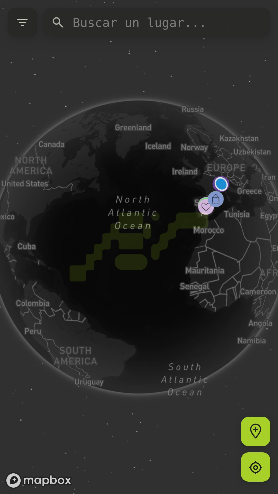
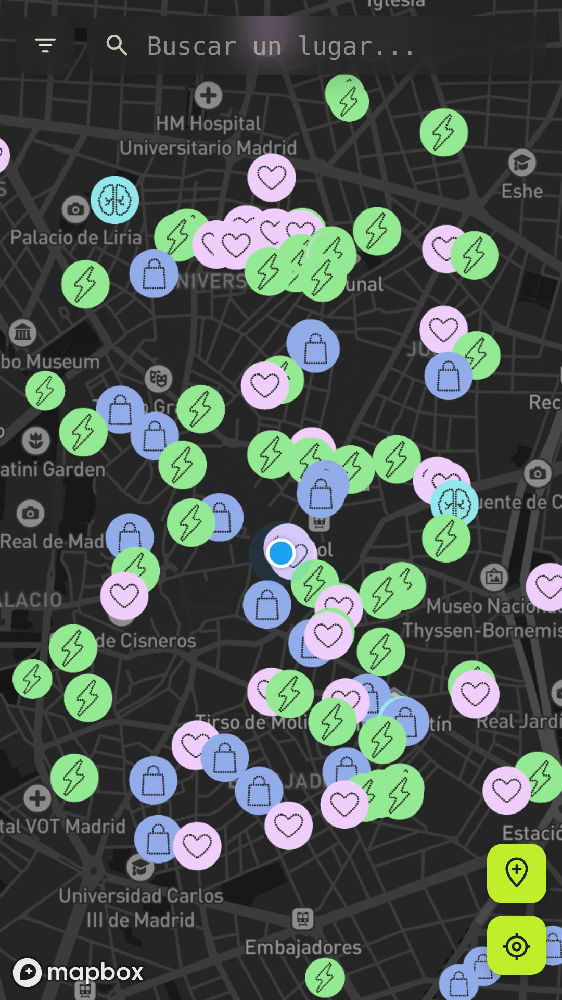
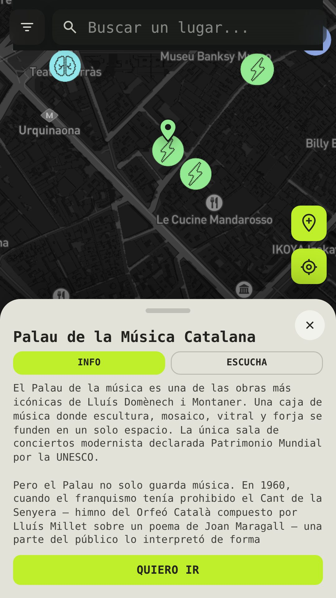
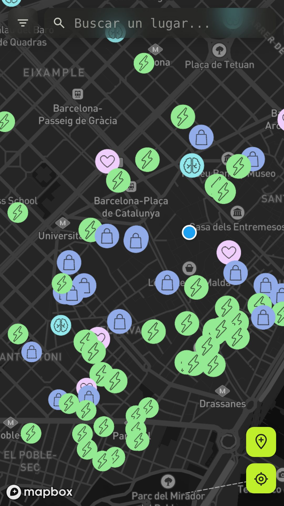
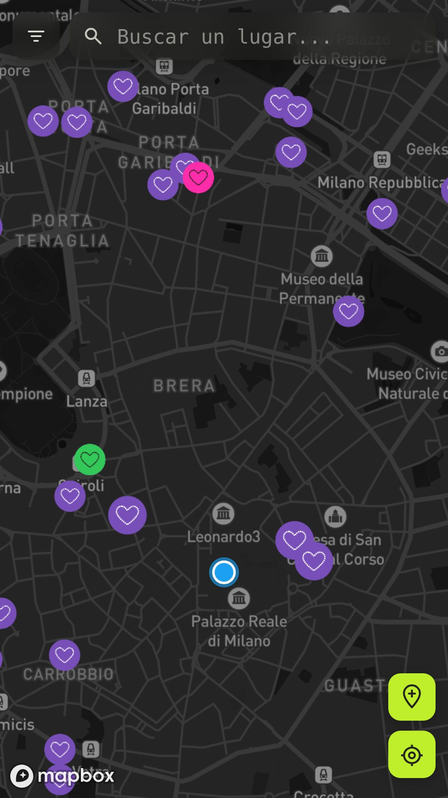
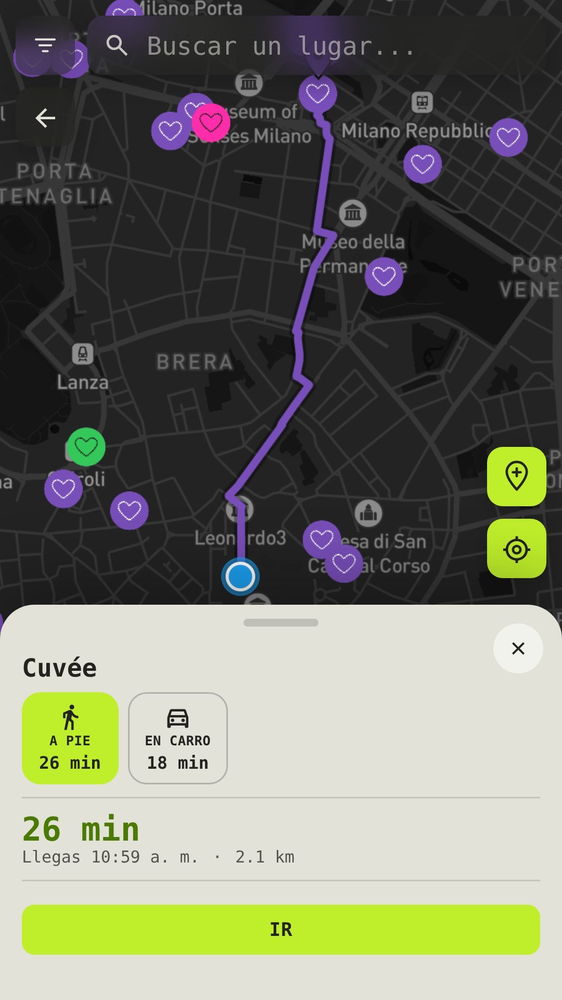
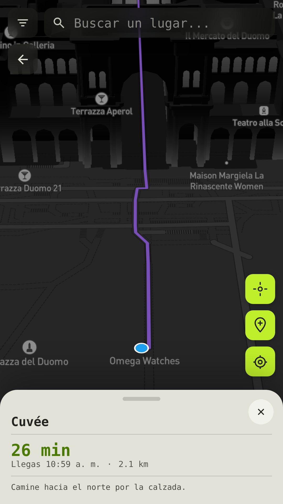
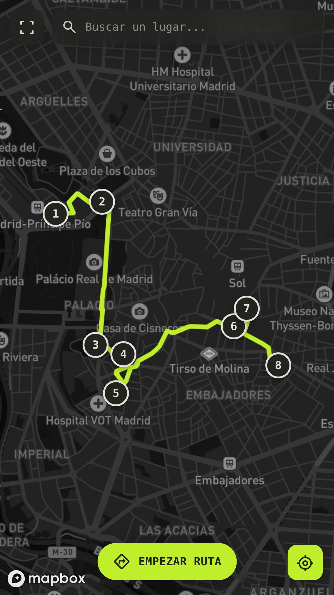
Un mapa para descubrir la música de cada ciudad
Postal Sounds es una guía 100 % enfocada en música para conocer una ciudad a través de su sonido: dónde escuchar música en vivo, tiendas de discos, la historia detrás de canciones famosas y rutas con expertos locales.
Yo diseñé y programé su pieza central: el mapa interactivo de postalsounds.com, en su versión gratuita y en la Premium, y los mapas de sus rutas guiadas. Hoy recorre Madrid, Barcelona y Milán.
- Cliente
- Postal Sounds
- Mi papel
- Diseño y desarrollo del mapa interactivo
- Ciudades
- Madrid, Barcelona y Milán
- Desde
- Julio de 2026 · en producción
- Dónde verlo
- postalsounds.com
Tres ciudades, cada una con su sonido
Cada lugar tiene su categoría y su color, así que de un vistazo sabes qué hay cerca:
Madrid
0 lugaresTablaos de flamenco, clubes de jazz, la Movida madrileña y las calles que inspiraron canciones de Hombres G o Mecano.
Rutas y extrasBarcelona
0 lugaresDel Palau de la Música y el Liceu a los rincones de la rumba catalana, de Peret a Carmen Amaya.
Rutas y extrasMilán
0 lugaresLa ciudad de la Milano Music Week y el festival Linecheck, con su propia agenda de conciertos y categorías del festival.
Rutas y extrasDel espacio a la puerta del local
Así se usa en un celular, en Madrid, Barcelona y Milán: llegas desde la Tierra, eliges un lugar y el mapa te lleva. Desliza para ver más.
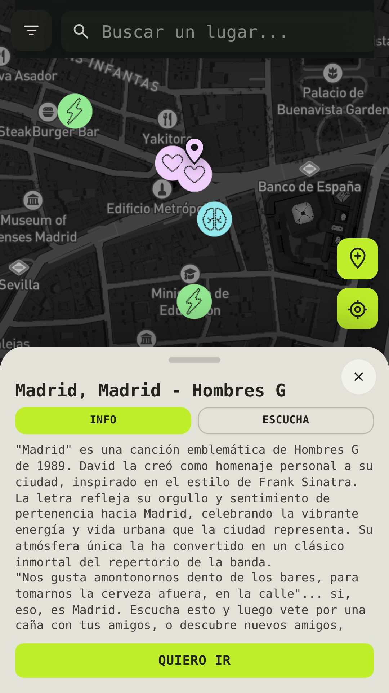
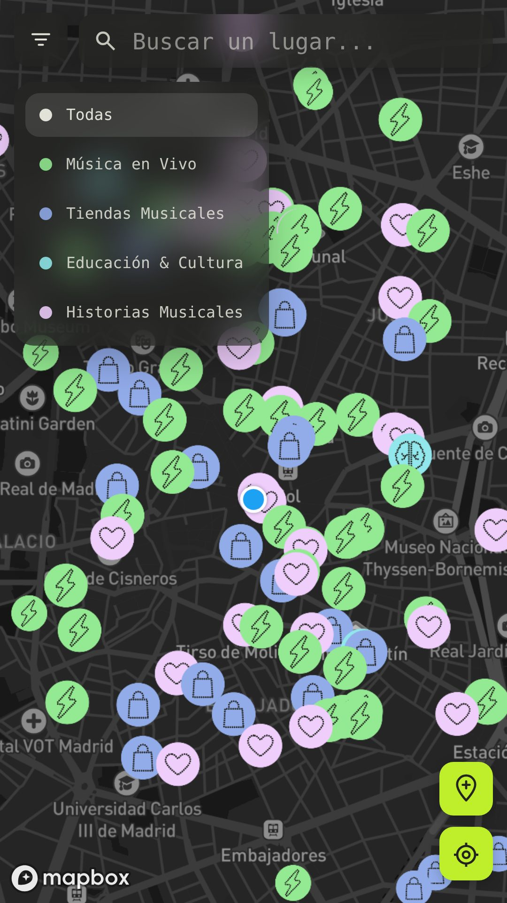
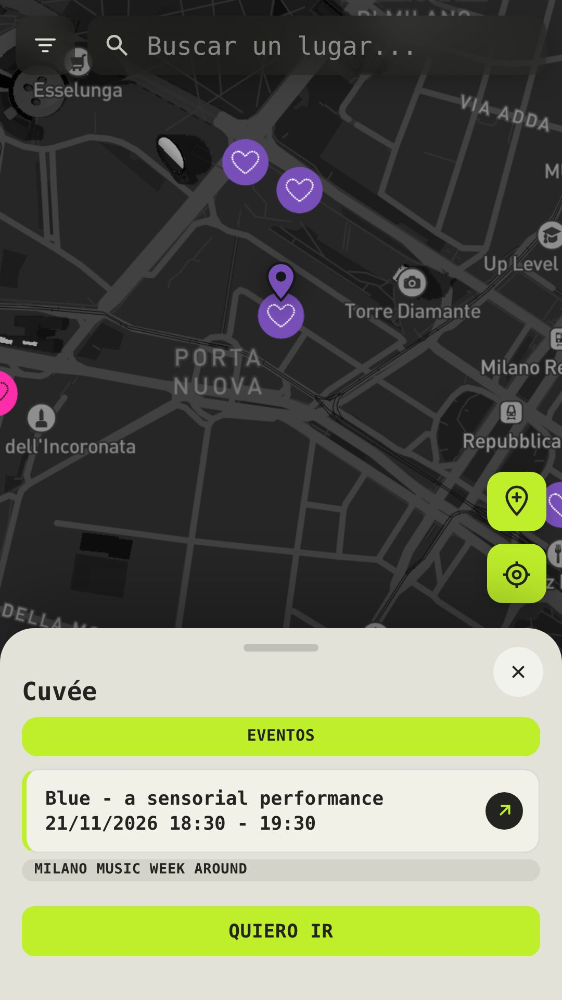
Lo que puedes hacer con él
Una entrada que engancha
El mapa abre con el logo sobre una Tierra que gira y vuela hasta tu ciudad. Se ve enseguida, incluso con mala conexión.
Se entiende de un vistazo
Cada lugar lleva el icono y el color de su categoría. Busca por nombre o filtra por tipo, y el mapa responde al instante.
Conoce el lugar antes de ir
Su historia, fotos, la canción para escucharla ahí mismo y la agenda de conciertos, en un panel que se desliza desde abajo.
Te lleva hasta la puerta
«Quiero ir» calcula la ruta a pie o en carro con tiempo, distancia y hora de llegada, y te guía paso a paso.
Rutas guiadas
Itinerarios con paradas numeradas, como Madrid Flamenco o Rumba Catalana, listos para empezar con un toque.
Gratis o Premium
La versión gratuita deja probar una selección de lugares en cada ciudad. La Premium abre el mapa completo.
Abierto a la comunidad
Cualquiera puede sugerir un nuevo lugar musical desde el propio mapa para que el equipo lo revise.
En tu idioma y tu pantalla
Lugares, historias y botones en español o en inglés, en cualquier celular, tablet o computador.
Rápido, fiable y fácil de mantener
Carga rápido
Primero muestra lo esencial y el detalle de cada lugar llega cuando lo abres.
Nunca se queda en blanco
Si el servicio de datos falla, el mapa sigue funcionando con una copia de respaldo que se actualiza cada día.
Fácil de actualizar
Lugares, eventos y rutas se actualizan desde un panel de gestión, sin tocar código.
Probado en celulares de verdad
Cada cambio se prueba en distintos celulares y navegadores, incluido el Safari del iPhone, antes de publicarse.
Cómo fue creciendo
La idea
Un primer mapa para probar lugares, filtros, búsqueda, ubicación y rutas.
En postalsounds.com
Mapas gratuito y Premium en dos idiomas, navegación «Ir» y rutas guiadas.
Más fácil de gestionar
Lugares y rutas pasan a un panel de gestión; el mapa carga más rápido y tiene respaldo.
Llega Milán
Más de 100 lugares de la Milano Music Week, con su agenda y sus propias categorías.
Míralo funcionando
El mapa está en postalsounds.com, con una cuenta gratuita. Si necesitas un mapa interactivo o una app parecida para tu proyecto, escríbeme.